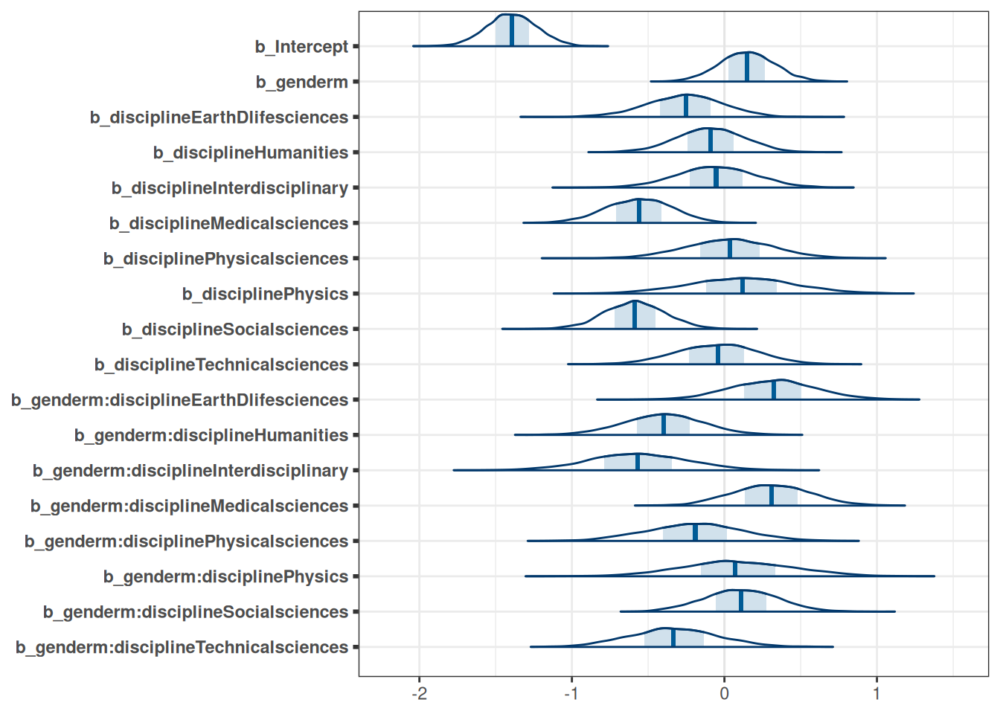
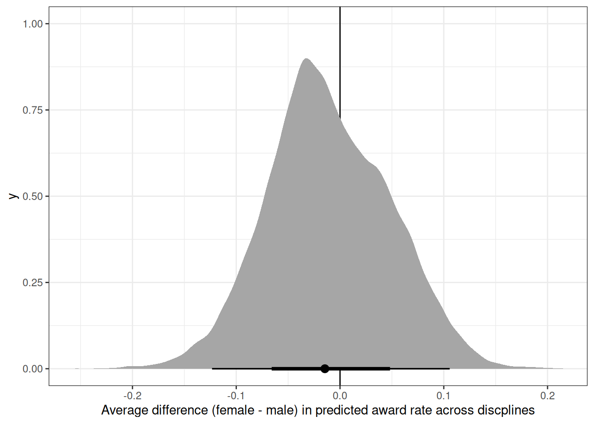
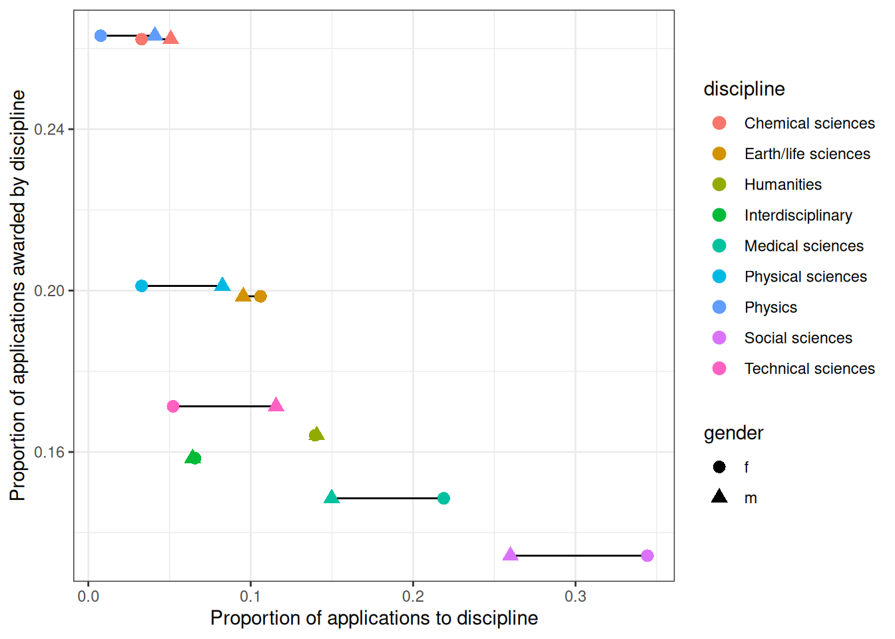

source('R/packages.R')Homework 05
Data
# Data
source('R/data_grants.R')
# discipline
# gender
# applications
# awards
DT_grants <- data_grants()Question 1
The data in data(NWOGrants) are outcomes for scientific funding applications for the Netherlands Organization for Scientific Research (NWO) from 2010–2012 (see van der Lee and Ellemers doi:10.1073/pnas.1510159112). These data have a structure similar to the UCBAdmit data discussed in Chapter 11 and in lecture. There are applications and each has an associated gender (of the lead researcher). But instead of departments, there are disciplines. Draw a DAG for this sample. Then use the backdoor criterion and a binomial GLM to estimate the TOTAL causal effect of gender on grant awards
coords <- data.frame(
name = c('G', 'D', 'A'),
x = c(1, 2, 3),
y = c(0, 1, 0)
)
dagify(
A ~ G + D,
D ~ G + A,
coords = coords
) |> ggdag(seed = 2) + theme_dag()Total effect of gender on award has two paths: through discipline and directly to award.
Prior predictive simulation
get_prior(
awards | trials(applications) ~ gender,
family = 'binomial',
data = DT_grants
) prior class coef group resp dpar nlpar lb ub
(flat) b
(flat) b genderm
student_t(3, 0, 2.5) Intercept
source
default
(vectorized)
defaulttar_load(m_h05_q01_prior)
m_h05_q01_prior$priorsNULLmcmc_areas(m_h05_q01_prior, regex_pars = 'b')
Posterior
tar_load(m_h05_q01)
m_h05_q01 Family: binomial
Links: mu = logit
Formula: awards | trials(applications) ~ gender
Data: DT_grants (Number of observations: 18)
Draws: 4 chains, each with iter = 2000; warmup = 1000; thin = 1;
total post-warmup draws = 4000
Population-Level Effects:
Estimate Est.Error l-95% CI u-95% CI Rhat Bulk_ESS Tail_ESS
Intercept -1.74 0.08 -1.89 -1.59 1.00 2211 2503
genderm 0.20 0.10 0.01 0.40 1.00 2691 2575
Draws were sampled using sampling(NUTS). For each parameter, Bulk_ESS
and Tail_ESS are effective sample size measures, and Rhat is the potential
scale reduction factor on split chains (at convergence, Rhat = 1).mcmc_areas(m_h05_q01, regex_pars = 'b')Estimated marginal means
emmean_total_gender <- emmeans(m_h05_q01, ~ gender, regrid = 'response')
emmean_total_gender gender prob lower.HPD upper.HPD
f 0.150 0.131 0.170
m 0.177 0.158 0.194
Point estimate displayed: median
HPD interval probability: 0.95 plot(emmean_total_gender, level = .87) + xlim(0, 1) + xlab('award')Contrast
contrast(emmean_total_gender, method = 'pairwise') contrast estimate lower.HPD upper.HPD
f - m -0.0273 -0.0544 -0.00148
Point estimate displayed: median
HPD interval probability: 0.95 Question 2
Now estimate the DIRECT causal effect of gender on grant awards. Use the same DAG as above to justify one or more binomial models. Compute the average direct causal effect of gender, weighting each discipline in proportion to the number of applications in the sample. Refer to the marginal effect example in Lecture 9 for help.
Direct effect of gender on award requires conditioning on discipline.
Posterior
tar_load(m_h05_q02)
m_h05_q02 Family: binomial
Links: mu = logit
Formula: awards | trials(applications) ~ gender * discipline
Data: DT_grants (Number of observations: 18)
Draws: 4 chains, each with iter = 2000; warmup = 1000; thin = 1;
total post-warmup draws = 4000
Population-Level Effects:
Estimate Est.Error l-95% CI u-95% CI Rhat
Intercept -1.39 0.17 -1.72 -1.07 1.00
genderm 0.15 0.18 -0.21 0.50 1.00
disciplineEarthDlifesciences -0.26 0.25 -0.76 0.21 1.00
disciplineHumanities -0.09 0.22 -0.54 0.32 1.00
disciplineInterdisciplinary -0.06 0.26 -0.56 0.45 1.00
disciplineMedicalsciences -0.56 0.22 -1.00 -0.15 1.00
disciplinePhysicalsciences 0.03 0.29 -0.53 0.59 1.00
disciplinePhysics 0.11 0.35 -0.57 0.80 1.00
disciplineSocialsciences -0.59 0.20 -0.98 -0.20 1.00
disciplineTechnicalsciences -0.05 0.27 -0.58 0.46 1.00
genderm:disciplineEarthDlifesciences 0.32 0.28 -0.23 0.88 1.00
genderm:disciplineHumanities -0.40 0.26 -0.93 0.12 1.00
genderm:disciplineInterdisciplinary -0.56 0.33 -1.21 0.08 1.00
genderm:disciplineMedicalsciences 0.31 0.26 -0.18 0.81 1.00
genderm:disciplinePhysicalsciences -0.19 0.31 -0.80 0.42 1.00
genderm:disciplinePhysics 0.09 0.37 -0.61 0.81 1.00
genderm:disciplineSocialsciences 0.11 0.24 -0.36 0.57 1.00
genderm:disciplineTechnicalsciences -0.33 0.29 -0.89 0.25 1.00
Bulk_ESS Tail_ESS
Intercept 3049 3085
genderm 3420 3139
disciplineEarthDlifesciences 4020 2646
disciplineHumanities 3883 3121
disciplineInterdisciplinary 4820 3325
disciplineMedicalsciences 3890 3053
disciplinePhysicalsciences 4429 2894
disciplinePhysics 4788 2639
disciplineSocialsciences 3646 2997
disciplineTechnicalsciences 4453 3311
genderm:disciplineEarthDlifesciences 5047 3279
genderm:disciplineHumanities 4354 2747
genderm:disciplineInterdisciplinary 5120 2880
genderm:disciplineMedicalsciences 4444 3457
genderm:disciplinePhysicalsciences 4971 3365
genderm:disciplinePhysics 4965 2604
genderm:disciplineSocialsciences 4069 3360
genderm:disciplineTechnicalsciences 4916 3102
Draws were sampled using sampling(NUTS). For each parameter, Bulk_ESS
and Tail_ESS are effective sample size measures, and Rhat is the potential
scale reduction factor on split chains (at convergence, Rhat = 1).mcmc_areas(m_h05_q02, regex_pars = 'b')
Estimated marginal means
emmean_direct_gender <- emmeans(m_h05_q02, ~ gender * discipline, regrid = 'response')
emmean_direct_gender gender discipline prob lower.HPD upper.HPD
f Chemical sciences 0.199 0.1506 0.252
m Chemical sciences 0.224 0.1658 0.286
f Earth/life sciences 0.161 0.1076 0.218
m Earth/life sciences 0.234 0.1746 0.295
f Humanities 0.184 0.1343 0.237
m Humanities 0.150 0.1082 0.197
f Interdisciplinary 0.191 0.1243 0.264
m Interdisciplinary 0.135 0.0833 0.199
f Medical sciences 0.124 0.0924 0.163
m Medical sciences 0.182 0.1441 0.232
f Physical sciences 0.205 0.1239 0.296
m Physical sciences 0.197 0.1359 0.262
f Physics 0.217 0.1069 0.340
m Physics 0.260 0.1662 0.358
f Social sciences 0.121 0.0949 0.153
m Social sciences 0.152 0.1174 0.183
f Technical sciences 0.192 0.1223 0.269
m Technical sciences 0.165 0.1187 0.217
Point estimate displayed: median
HPD interval probability: 0.95 plot(emmean_direct_gender, level = .87) + xlim(0, 1) + labs(x = 'award', y = 'discipline')Contrast
Emmeans contrast
cont <- contrast(emmean_direct_gender, by = 'discipline')
contrast(emmean_direct_gender, by = 'discipline') |> plot()Prediction contrast preserving entire posterior
predicted_f <- copy(DT_grants)[, gender := 'f'] |> add_linpred_draws(transform =TRUE, m_h05_q02, value = 'pred_f')
predicted_m <- copy(DT_grants)[, gender := 'm'] |> add_linpred_draws(transform =TRUE, m_h05_q02, value = 'pred_m')
setDT(predicted_f)
predicted_f[, gender := NULL]
setDT(predicted_m)
predicted_m[, gender := NULL]
m <- predicted_f[predicted_m, on = intersect(colnames(predicted_f), colnames(predicted_m))]
m[, diff_fm := pred_f - pred_m]
ggplot(m) +
geom_vline(xintercept = 0) +
stat_halfeye(aes(diff_fm, discipline)) +
labs(x = 'Difference (female - male) in predicted award rate by discipline')
ggplot(m) +
geom_vline(xintercept = 0) +
stat_halfeye(aes(diff_fm)) +
labs(x = 'Average difference (female - male) in predicted award rate across discplines')
Question 3
Considering the total effect (problem 1) and direct effect (problem 2) of gender, what causes contribute to the average difference between women and men in award rate in this sample? It is not necessary to say whether or not there is evidence of discrimination or the presence or absence of unobserved confounds (which are likely!). Simply explain how the direct effects you have estimated make sense (or not) of the total effect.
Gender level differences in number of applications to each discipline. Some disciplines, eg. social sciences and medical sciences, have lower overall award rates and female applicants tend to apply to these more than male applicants.
DT_grants[, .(discipline, prop_app = applications / sum(applications), awards), gender] gender discipline prop_app awards
<fctr> <fctr> <num> <int>
1: m Chemical sciences 0.050764526 22
2: m Physical sciences 0.082568807 26
3: m Physics 0.040978593 18
4: m Humanities 0.140672783 33
5: m Technical sciences 0.115596330 30
6: m Interdisciplinary 0.064220183 12
7: m Earth/life sciences 0.095412844 38
8: m Social sciences 0.259938838 65
9: m Medical sciences 0.149847095 46
10: f Chemical sciences 0.032828283 10
11: f Physical sciences 0.032828283 9
12: f Physics 0.007575758 2
13: f Humanities 0.139730640 32
14: f Technical sciences 0.052188552 13
15: f Interdisciplinary 0.065656566 17
16: f Earth/life sciences 0.106060606 18
17: f Social sciences 0.344276094 47
18: f Medical sciences 0.218855219 29ggplot(DT_grants[, .(awards, applications), .(gender, discipline)],
aes(awards / applications, discipline)) +
geom_line() +
geom_point(aes(color = gender), size = 3) +
scale_color_scico_d(end = .7)DT_grants[, award_by_disc := sum(awards), discipline]
DT_grants[, prop_award_by_disc := sum(awards) / sum(applications), discipline]
ggplot(DT_grants[, .(prop_award_by_disc, discipline, prop_app = applications / sum(applications), awards), gender],
aes(prop_app, prop_award_by_disc)) +
geom_line(aes(group = discipline)) +
geom_point(aes(shape = gender, color = discipline), size = 3) +
labs(x = 'Proportion of applications to discipline',
y = 'Proportion of applications awarded by discipline')